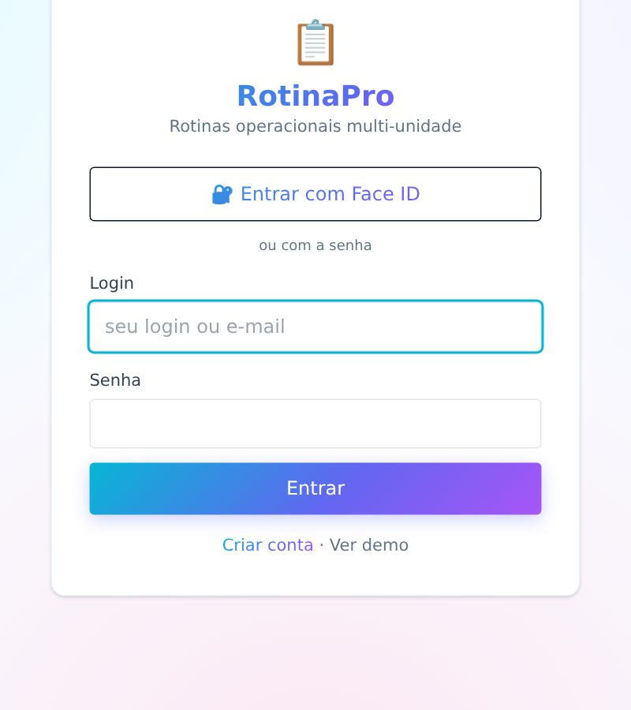
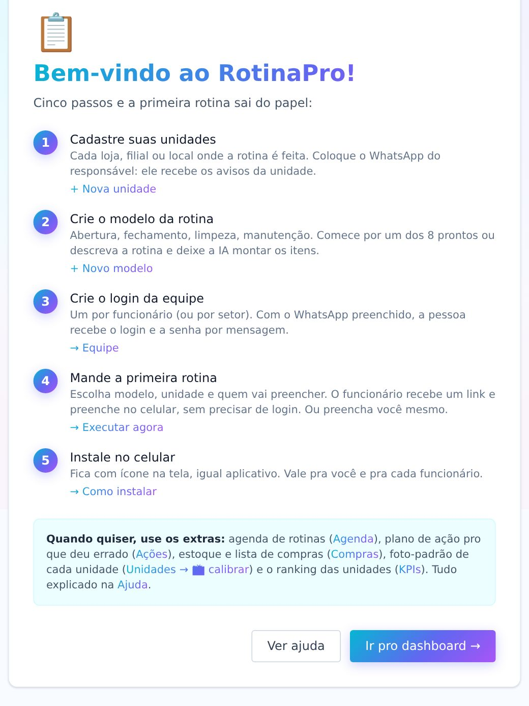
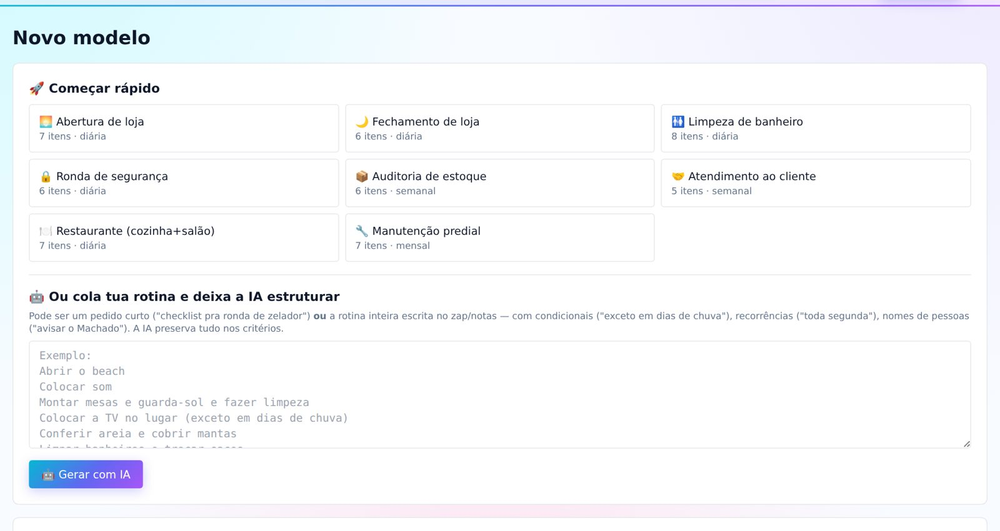
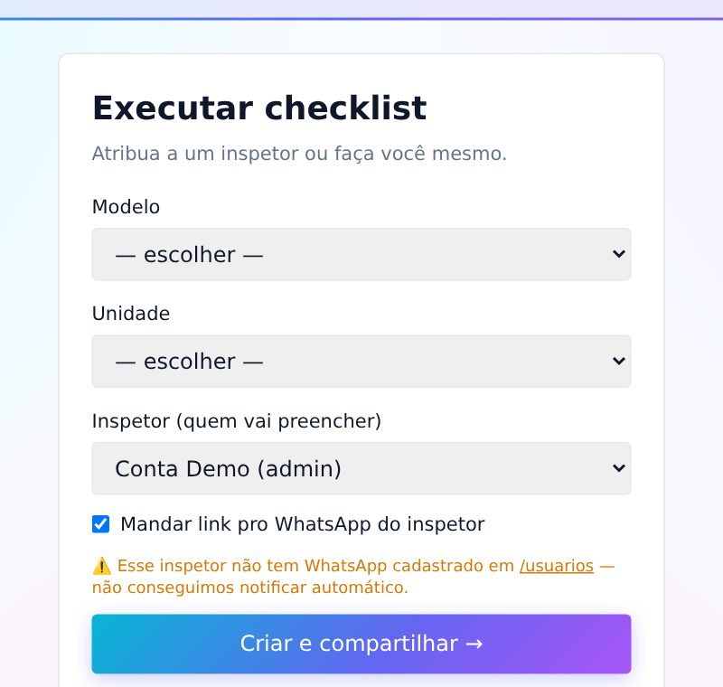
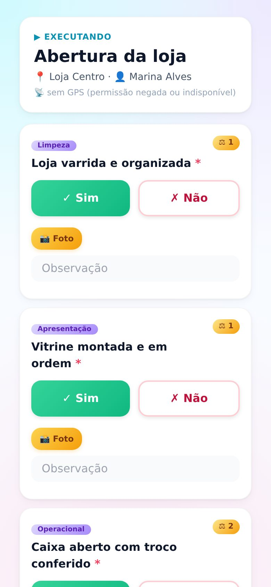
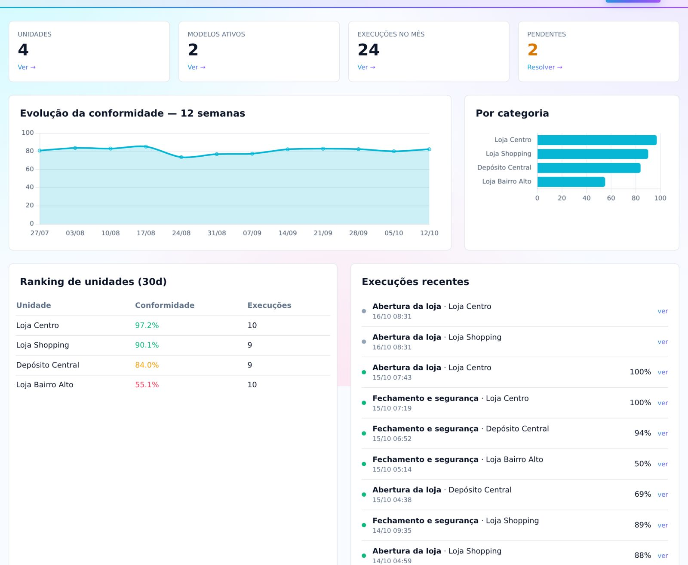
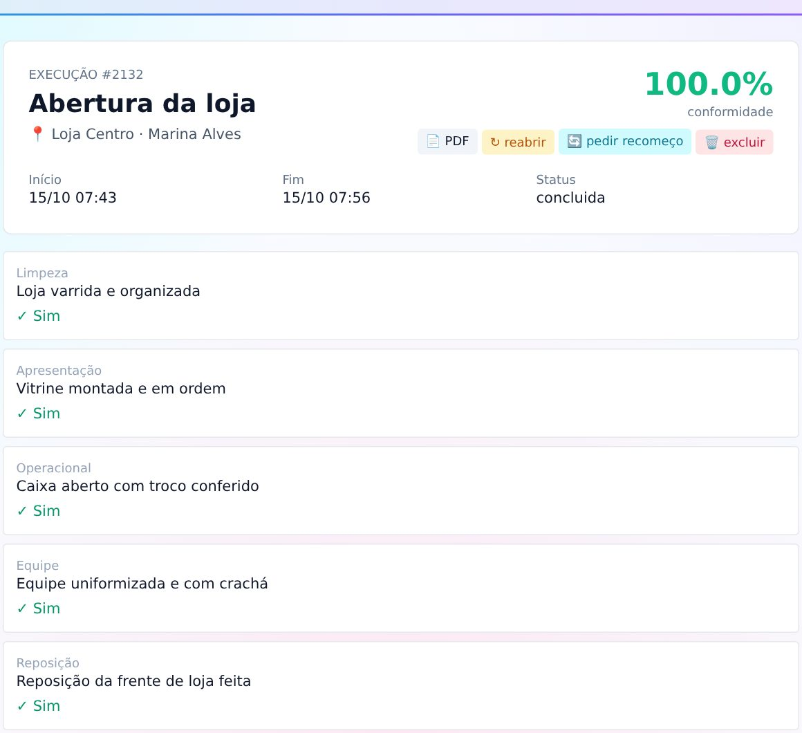
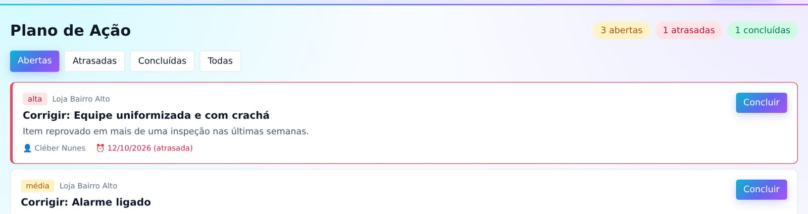
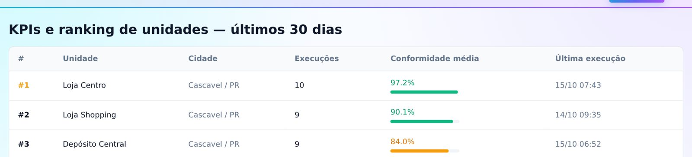
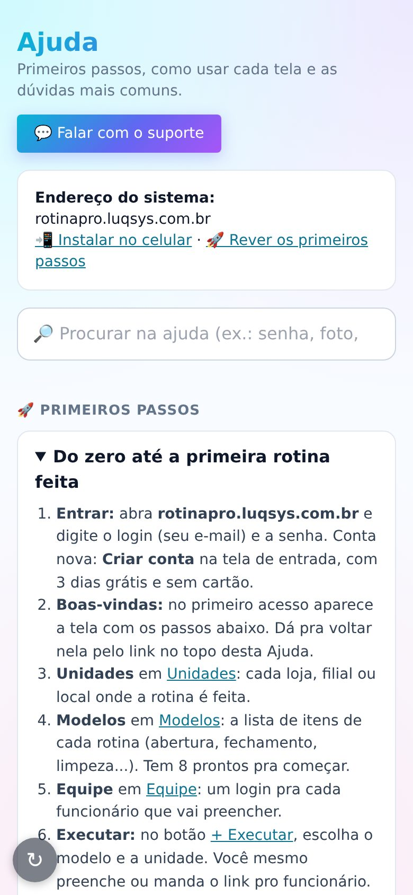

Da conta criada até a primeira rotina conferida: unidades, modelos de checklist, como o funcionário preenche pelo celular, o acompanhamento das notas e as dúvidas mais comuns.
Em rotinapro.luqsys.com.br, toque em Criar conta: seu nome, empresa, e-mail, WhatsApp e senha (mínimo 6 caracteres). São 3 dias grátis, sem cartão.
No navegador do celular ou do computador. É o mesmo sistema nos dois.
Depois de entrar, toque no 🔐 do topo. Na próxima vez, use Entrar com Face ID. Vale pro aparelho onde foi ativado, e a senha continua valendo.
Não tem "esqueci a senha" na tela de entrada. Funcionário: o admin troca em Equipe → editar → Trocar senha. Dono da conta: fale com o suporte no WhatsApp.
Abra rotinapro.luqsys.com.br/instalar e siga o passo a passo do iPhone ou do Android. Fica com ícone na tela de início, igual um aplicativo.

No primeiro acesso aparece a tela de boas-vindas com cinco passos. Faça nesta ordem:
Cada loja, filial ou local onde a rotina é feita. Coloque o responsável com WhatsApp: ele recebe os avisos da unidade. Tem muitas? 📤 Importar CSV em Unidades.
A lista de itens que o funcionário confere. Veja a seção 3.
Em Equipe → + Novo usuário: nome, e-mail (vira o login), WhatsApp, senha inicial e papel. Com WhatsApp, a pessoa recebe o login e a senha por mensagem.
No botão + Executar. Veja a seção 4.
Pra você e pra cada funcionário.

| Inspetor | Executa as rotinas. |
| Calibrador | Também tira as fotos-padrão das unidades. |
| Admin | Gerencia tudo, inclusive equipe e integrações. Reabre e exclui execuções. |
| Viewer | Pra quem só acompanha. |
Em Equipe → ⚙️ Apelidos dos papéis você muda o nome que aparece (ex.: "Inspetor" vira "Colaborador"). Funcionário saiu? desativar: o login para de funcionar e o histórico fica guardado.
Em Modelos → + Novo modelo. Três jeitos de começar:

| Tipo de resposta | Sim/Não e Nota 0-10 contam na % de conformidade. Texto livre, Só foto, 🛒 Contagem estoque (atualiza o estoque ao concluir) e 📋 Conferência NF (foto da nota). |
| Peso | Quanto o item vale na nota. Peso 2 vale o dobro de um peso 1. |
| Obrigatório | Marcado, a rotina não conclui com o item em branco. |
| Critérios IA | Opcional: o que a IA deve olhar na foto. Ex.: "sem caixas no chão". |
| Foto de referência | Opcional: o estado ideal. Salve o modelo antes, depois abra de novo pra anexar. |
No modelo ainda tem o SLA (prazo em horas pra concluir, vazio = sem prazo) e a criticidade de 1 a 10, que muda o tom do aviso de atraso.
Vai preencher você mesmo? Deixe você como inspetor: a rotina abre na hora.


Quem preenche pelo login tem também a observação geral, a assinatura do inspetor e a do responsável da unidade, e a localização do celular (se permitir).

Conta só os itens Sim/Não e Nota 0-10. Cada "Sim" vale o peso do item, e a nota vale proporcional (nota 7 = 70% do peso). Texto, foto e contagem não entram.
Em Execuções, toque em ver: respostas, fotos, início e fim e a localização. Ali também:
| Relatório da execução pra imprimir ou mandar. | |
| ↻ reabrir | Volta pra preencher de novo, mantendo as respostas. |
| 🔄 pedir recomeço | Apaga as respostas e avisa o inspetor no WhatsApp. |
| 🗑 excluir | Apaga a execução. |
Reabrir, recomeço e excluir são só pra admin. O link venceu? O 🔗 da linha em Execuções gera um novo e manda no WhatsApp do inspetor.


Ranking das unidades nos últimos 30 dias: execuções, conformidade média e a última execução de cada uma.

| Agenda | Programe modelo, unidade, data, hora e a recorrência (única, diária, semanal ou mensal). |
| 🛒 Compras | Itens com quantidade atual e mínima. Abaixo do mínimo aparece em Comprar. 📲 Compartilhar monta a lista pra mandar no WhatsApp. |
| Upload NF | Em Execuções, 📤 Upload NF / pedido: a IA lê a nota e cria uma rotina pra conferir o que chegou. |
| Fotos | Todas as fotos das rotinas, com filtro por unidade, modelo e período. |
| 🔌 Integrações | Conexão com outros sistemas Luqsys, como o PDV Pro, pra puxar produtos. Fale com o suporte pra configurar. |
